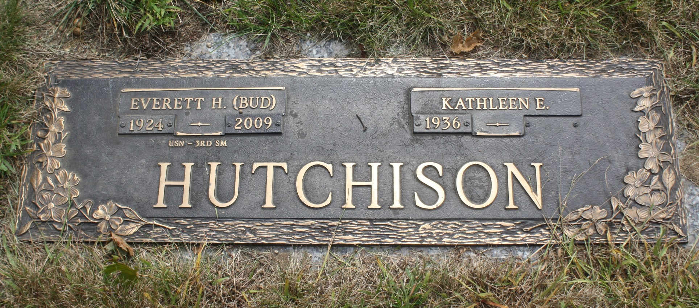
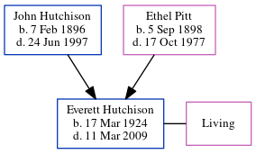

Everett Hedley Hutchison 1924 - 2009
[ Home ] | [ Calendar ] | [ Surnames Index ] | [ Census Index ] | [ Family History ]The child of John Hutchison (a trainman on railroad) and Ethel Pitt, Everett Hutchison, the fifth cousin on the father's side of Nigel Horne, was born in Canada on Mar 17, 19241,2,3. He was married to Kathleen E.
During his life, he was living in Providence, Rhode Island, USA on Apr 1, 19302 and on Apr 1, 19403.
He died on Mar 11, 2009 in Rhode Island1 and was buried at Highland Memorial Park, Johnston, Rhode Island after Mar 11, 2009.
Parents
- John Hedley was born on Feb 7, 1896
- Ethel Maud was born on Sep 5, 1898
Citations
- Social Security Death Index - Findmypast
- US Census 1930 - Findmypast (was age 6 and the son of the head of the household)
- US Census 1940 - Findmypast (was age 16 and the son of the head of the household)
Media
Everett Hutchinson - Gravestone

US Census 1930 - USC/1930/004953442/01118/001
Social Security Death Index - USBMD/SSDI/035181093
Family Tree
Generated by ged2site. Last updated on Jun 11, 2024